徹夜でラズパイ通信
筆者:E
10月16日の実証実験に向けて、HUB75ケーブルの付け替えと、Pi 5・ESP32・看板の通信テストをしました。気づいたら深夜2時半。Wi-Fiも電源も、そう簡単にはいかなかった……。
おはようございます（15時）
放課後になったので、さっそく作業を始めていきます。みんなはJPHACKSの会議をしていて忙しそう。（うちの班は何もしていない。まずい。）
自分一人でいつもの作業部屋にいるのも寂しいので、JPHACKSの会議部屋に移動して作業することにしました。
その道中、借りてきたポータブル電源を台車に乗せて、電源を入れたまま運んだ。
←入れる意味ないだろ。目立ちすぎるだろ。
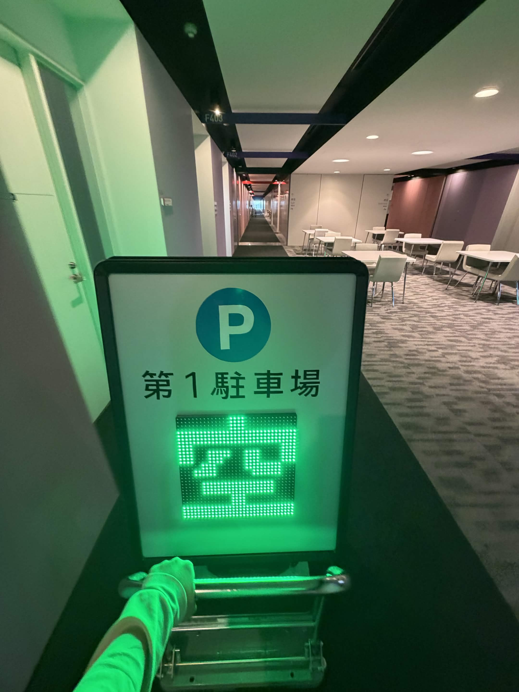
今日やるのは、看板のHUB75ケーブルの付け替えと、CPE210のWi-Fi通信テスト。10月16日に実証実験したいです！ってメールを送ってしまったので、そこに間に合わせるために頑張ります。
ジャンパ線を卒業したい
看板の表裏にあるLEDをつなぐHUB75ケーブルの長さが足りず、これまでは他の団体からパクってきた……じゃなくて借りてきたジャンパ線で代用していました。
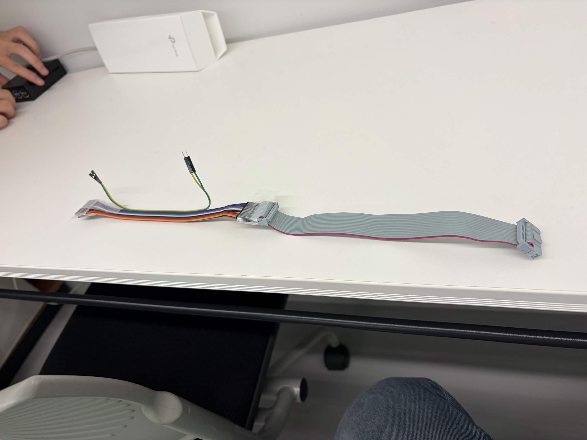
さすがに申し訳ないので、ちゃんとしたHUB75ケーブルを発注。特殊な規格なのか、どこのECサイトを見ても見つからず、AliExpressで10本入りをようやく発見しました。すごいマニアックなパーツだ。
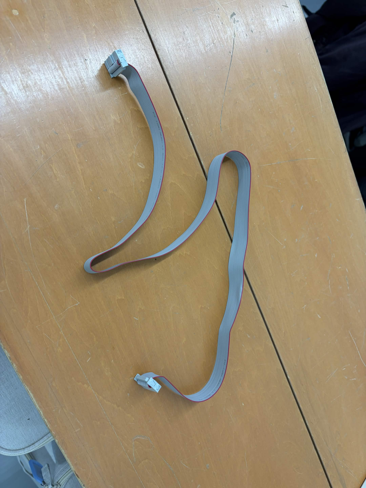
にしても、なんでオスオスのジャンパ線で代用できたんだろ……。
「最強のWi-Fi」でも届かない
Tが作ってくれたプログラムで実証実験。まずは会議部屋から、外にいる看板へ通信してみます。
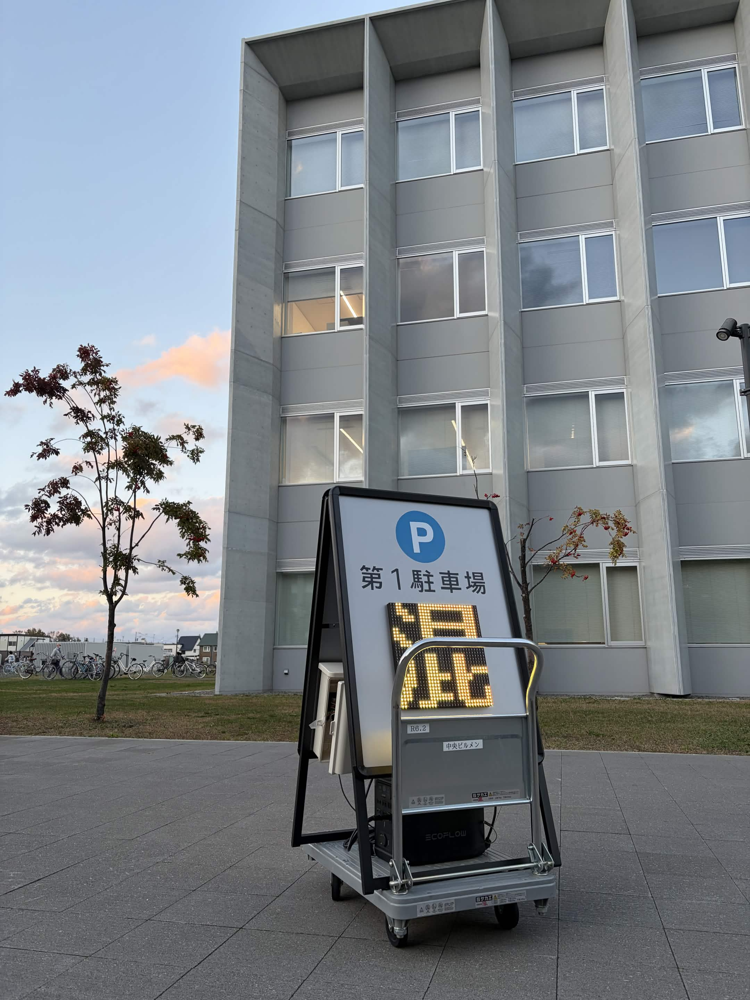
何も通じなかった。
CPE210という最強のWi-Fiでもダメ。看板を部屋に持って帰ることになりました。これを運ぶの、結構面倒なんですよね。
出るときはD棟、入るときはE棟1階から。ちょうどE棟ではセミナーかイベントのようなものがあって、スーツ姿の人たち50人くらいが真剣に話を聞いていました。そこに台車の重低音が響き渡る。しかも看板には「混」の文字。
めっっちゃ見られた。恥ずかしい。（でも正直、自慢したくなる。）
距離が離れすぎていたのかもしれないので、同じ高さでも試しました。警備員室から電波を飛ばす想定で、HITプラザのガラス越しにテスト。それでもESP32に接続できないくらい重い。
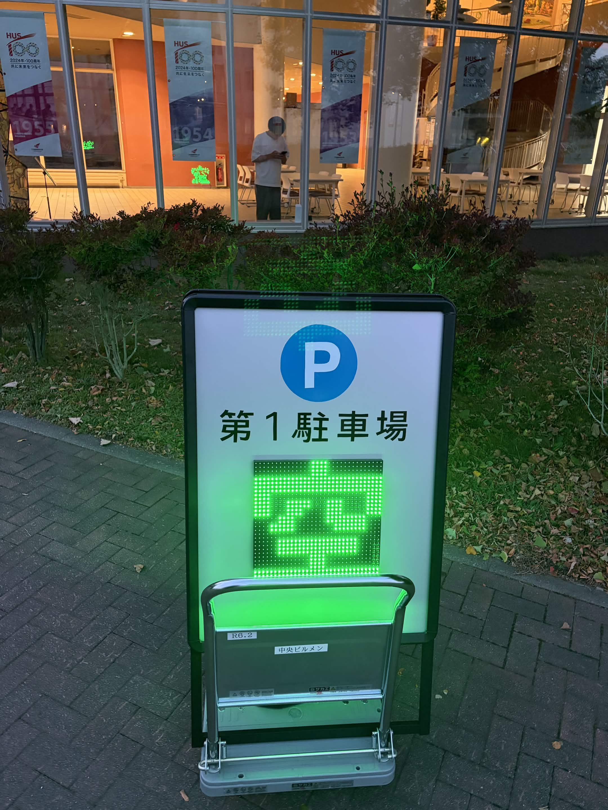
このときはESP32側でHTMLを含めて管理していて、ESP32につながらないと操作画面も読み込めません。通信も遅い。そこでTから「通信を最低限まで削ればいいんじゃね？」という案が出ました。
Pi 5でHTMLの操作画面を表示して、看板側には状態を表す1文字だけを送る。ESP32は受け取った数字を見て表示を切り替えるだけにする、という考え方です。
ブラウザで操作
↓
Pi 5（HTML画面・状態を決める）
↓ 0 / 1 / 2 の1文字だけ
CPE210（spaces Wi-Fi）
↓
ESP32（受信した数字に合わせて看板を表示）
空車 = 0 ／ 混雑 = 1 ／ 満車 = 2HTMLデータをやりとりするより、通信量をかなり減らせそう。とりあえずこの方針で進めます。
Arduino IDEでIPアドレスが出た！
看板をまた会議部屋に持って帰ります。やっぱり持って帰るのだるい。
前回セットアップしたPi 4たちは、SSH接続で使う方針になって初期化されたそうです。映像配信の機能しかなかったので、そこは大丈夫だったみたい。
ここでTは、21時に閉まるスープカレー屋へ20時半にテイクアウトしに行くということで離脱。看板内部のESP32を触ったことがなかったので、担当のTに少し教えてもらいました。
Arduino IDEで作業していたのですが、ESP32用のボードサポート（ライブラリ？拡張機能？）が必要だと知らず、最初はうまくいきませんでした。必要な設定をして、Codexと一緒に書いたプログラムを動かしてみます。
シリアルモニタを見ると、IPアドレスが表示された！最高だな。
プログラムは、まずCPE210の「spaces」に接続して、つながらない場合はeduroamに接続する構成です。心配だったのは、警備員室のガラス越しでも「spaces」が使えるのかどうか。
一度「spaces」を使わず、eduroamだけで看板を光らせてみました。台車で廊下を走り回ってもWi-Fiはほぼ途切れず、F棟とE棟の間で少し切れるくらい。安定してるじゃん！と思ったのですが、警備員室では別の問題が待っていました。
その前に腹ごしらえ。Tが学校に戻るタイミングでローソンで何か買うか聞いてくれました。Rと話していたらフードDも穴場では、という話になり、Rから「すかいらーくの25%引きあるし、ガストでいんじゃね？」と提案が。テイクアウトを買って、ついでにTも拾いました。おいしいご飯をいただきました。25%引き、結構コスパいいと思う。
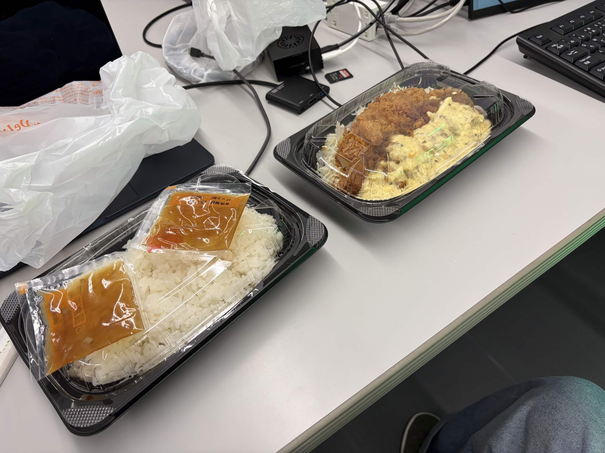
部屋を出るまでに何往復？
警備員室のWi-Fiがあるか忘れてしまったので、Tと一緒に確認しに行くことに。実際に使うPi 5を持っていきます。
借りたMakitaの電源にPi 5、タッチパネル、通信ケーブル、HDMIなどをつないで、いざ出発。
あれ、タッチできなくね？ 部屋に戻る。通信用ケーブルに替えて、もう一度出発。あれ、画面チカチカするくね？ 部屋に戻る。タッチパネルにも電源をつないで出発。あれ、Pi 5の電源が安定しなくね？ また戻る。
これ以外にも5回くらい部屋に戻った。Makitaの電源とPi 5とタッチパネルの相性が悪すぎる。電力不足かな……。
というわけで、看板につないだままの重たいポータブル電源を運ぶことに。看板を下ろすのも大変だし、せっかくだからそのまま持っていきます。
こっちにつなぐと電源が安定して、画面もチカチカしないしPi 5も落ちなくなりました。
そこにWi-Fiがない！
やっと外に出ました。寒い。Tに「これ光らせる意味ないだろ」と言われた。
それはそう。もはや人工太陽だ。（緑だけど。）
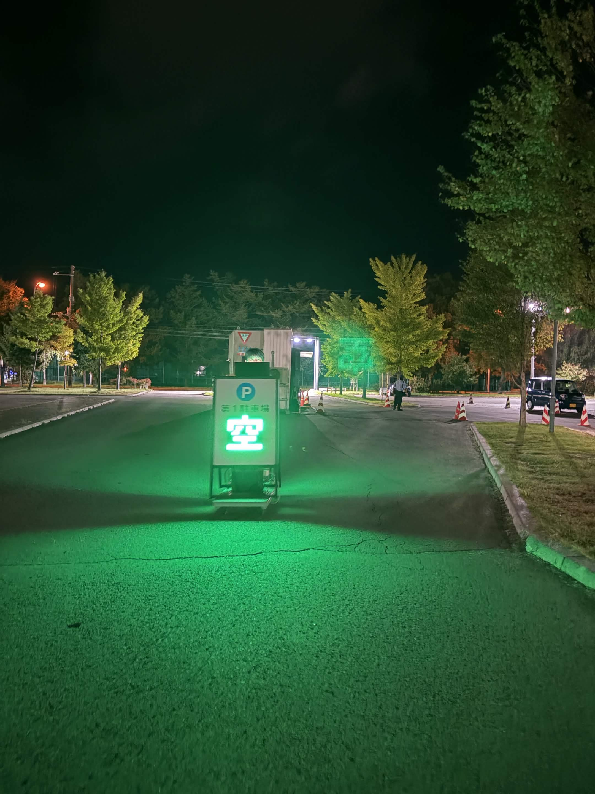
でも正直おもしろかったので、光らせたまま警備員室へ。警備員さんに「明日の実証実験のことって聞いていますか？」と聞いたら、「聞いていますよ！」とのこと。事前にメールしておいたので、話がスムーズでよかった。
Pi 5の画面を見て、Wi-Fiを拾っているか確認します。
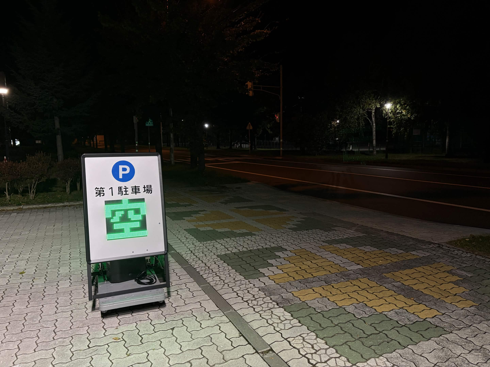
これ結構自信作
絶望した。何もない。
これじゃ通信できないじゃん！ eduroamも使えないじゃん！ ガラス越しではCPE210も使えなかったし、警備員室にインターネット環境はない。明日実証実験しますって宣言しておいて、できないパターン……？これはまずい。居残り決定です。
緊急会議が始まりました。まるで授業だ。
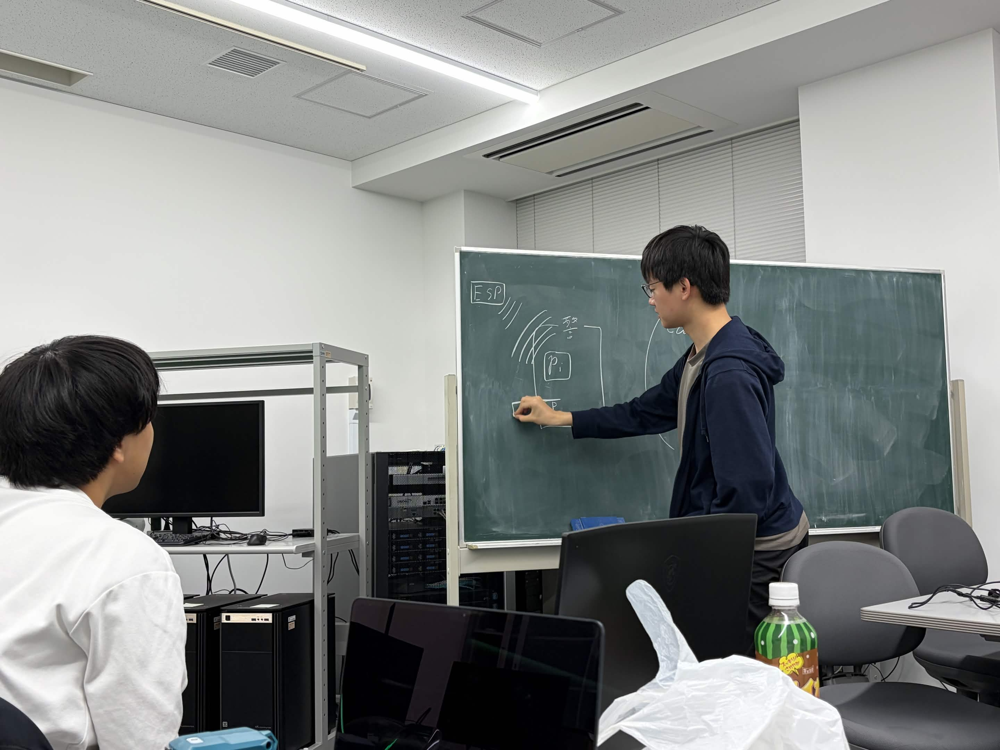
そのあと、ケーブルを少し動かしたときにminiPCの電源が落ちて、何で？となったのですが、後でminiPCを電源タップにつないでいたことが原因と分かり、今は解決済みです。
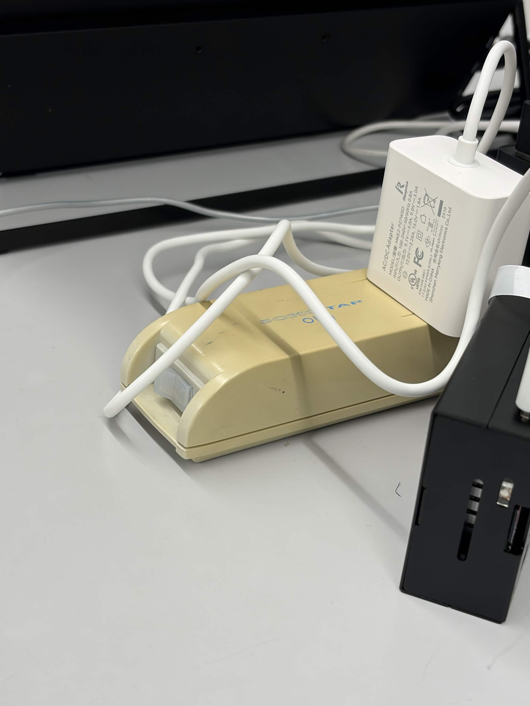
眠すぎて10分くらい気絶したあと、Tがいろいろ試して教えてくれました。eduroamを中継するのはセキュリティ上できない。やっぱりCPE210で「spaces」というWi-Fiを出して、ESP32をそこにつなぐのがよさそう。
Rはずっと映像転送に取り組んでいて、警備員室のPi 5用にカメラ監視システムを作ってくれていました。そこに自分が作っていた管理用HTMLを統合します。URLを書き換えたら画面にエラーが出た。
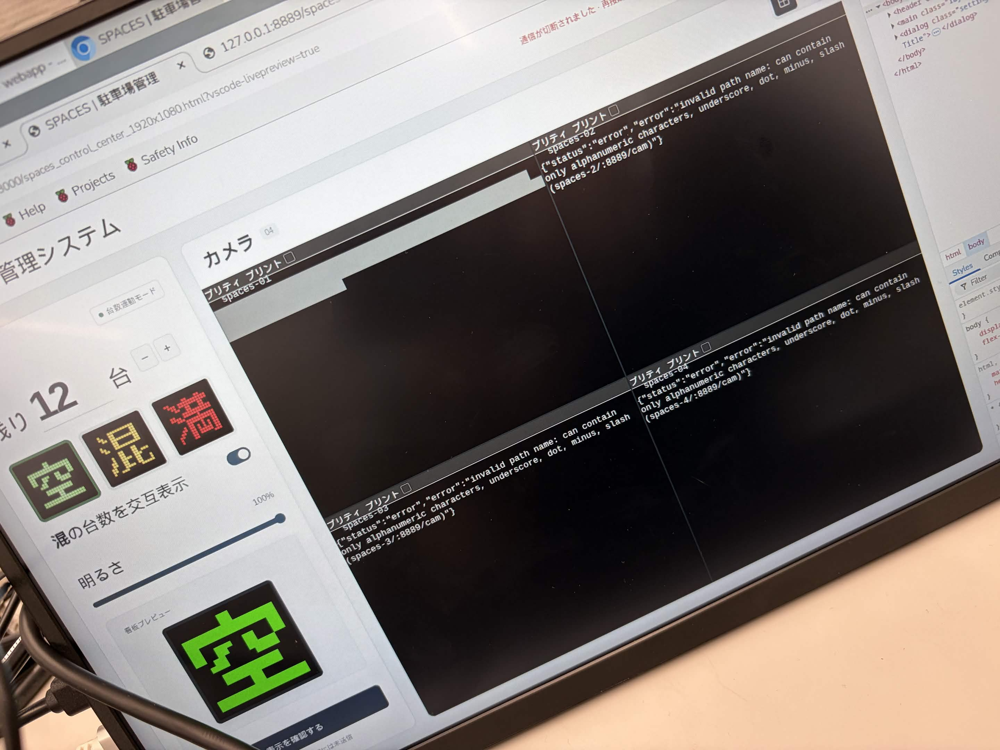
てか、プリティ プリントって何だよwwww かわいい印刷？www とツボにハマっていました。プログラムの「pretty-print」は、データを読みやすく整形して出力することらしい。あとでURLの形式が間違っていたことが分かり、修正したらちゃんと接続できました。
50mくらい先まで届いた
さっそくESP32と「spaces」の接続テスト。CPE210を廊下に持ち出して、どのくらい離れても通信できるのか試します。
結構行けた。50mくらいかな。
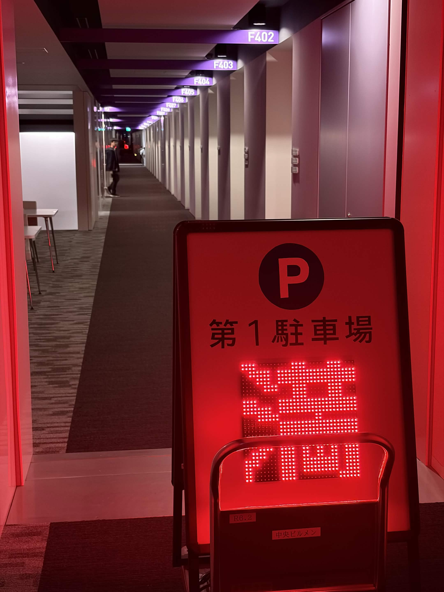